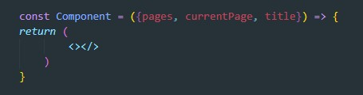
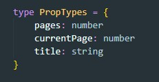
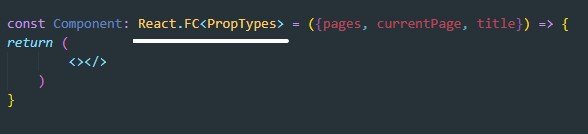

Допустим у нас есть обыкновенная функциональная компонента которая принимает пропсы и отрисовывает JSX
Первое что нам надо - это прописать типы для пропсов:
В TipeScript есть уже готовый тип (React.FC - functional component) для функциональных компонент который использует Generics для типизации пропсов. Вот как это выглядит:
Т.е. в качестве Generic мы указывает тип для пропсов